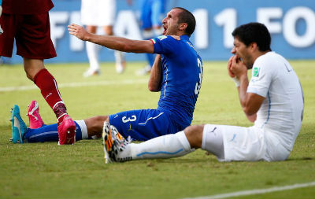

Tweets Uruguay - Italia
Último partido de la fase de grupos. ¿Qué se dijo usando el hashtag #URU sobre la enorme y sufrida clasificación de Uruguay a octavos? Este es el año de Godín.
Algo importante a mencionar es que la cantidad de tweets analizados son los que da la Streaming API de Twitter y que son un muestreo de la cantidad total que se generaron. La cuenta @TwitterData tiene las estadísticas de la totalidad de tweets generados durante el partido.
El rango de horas es desde las 12:50 hasta las 14:59.
Generales
Por Hora
Por período
170.121 tweets
1.479 por minuto
Minuto a minuto
Jugadores con más de 1.000 menciones
Usuarios más activos
| Jugador | País | Menciones |
|---|---|---|
| Luis Suárez |  | 22.191 |
| Diego Godín | | 5.523 |
| Mario Balotelli | 4.898 | |
| Claudio Marchisio | 3.587 | |
| Gianluigi Buffon | 3.387 | |
| Giorgio Chiellini | 2.596 | |
| Andrea Pirlo | 2.555 | |
| Edinson Cavani | | 2.202 |
| Álvaro Pereira | | 1.436 |
| Fernando Muslera | | 1.331 |
| Egidio Arévalo Ríos | | 1.272 |
| Nicolás Lodeiro | | 1.234 |
| Usuario | Cantidad |
|---|---|
| @rockdudk | 172 |
| @rupear | 136 |
| @LovefutbolEs | 100 |
| @roll_your_own | 73 |
| @KID_nuA | 92 |
| @caioo_sales | 70 |
| @EBCEsporte | 67 |
| @feyalegria850 | 62 |
| @diariolibero | 62 |
| @FeyAlegria881 | 62 |
¿Cuántas menciones para esto?

Foto: Reuters
Foto: Reuters
> 7.900
Los hashtags más usados
Tecnologías y datos
Los datos se obtuvieron gracias a la Streaming API de Twitter y las gráficas fueron generadas usando D3 y Google Annotation Chart.
La nuble de palabras fue creada con la librería d3-cloud para D3.
Los íconos usados se descargaron de estas fuentes: